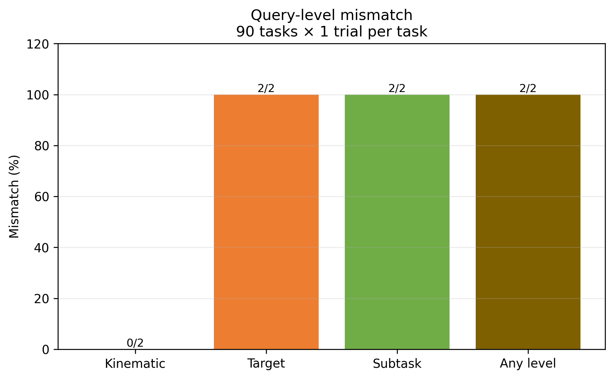
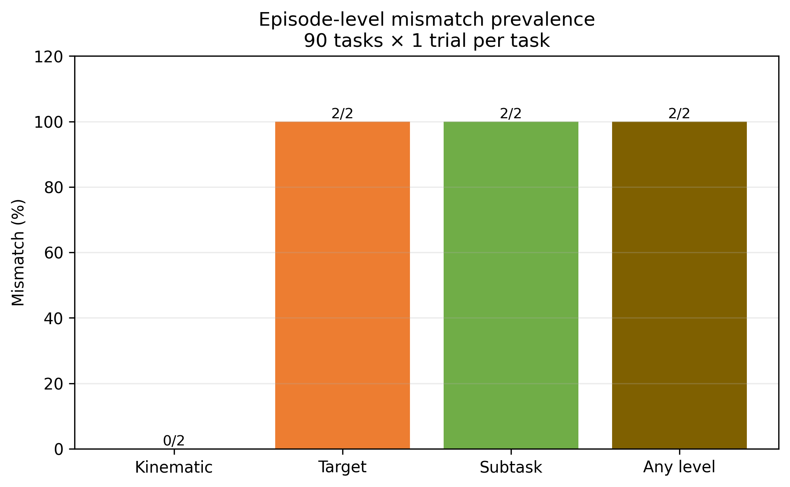
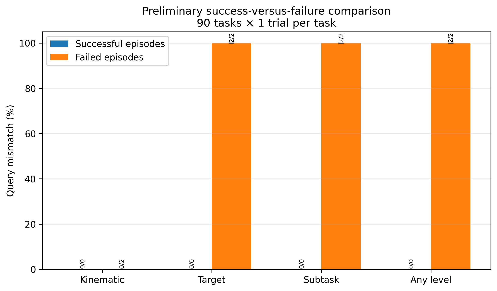
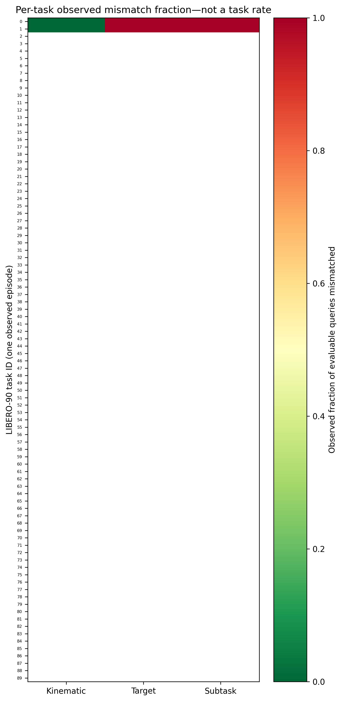
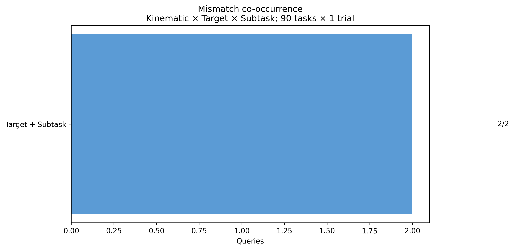
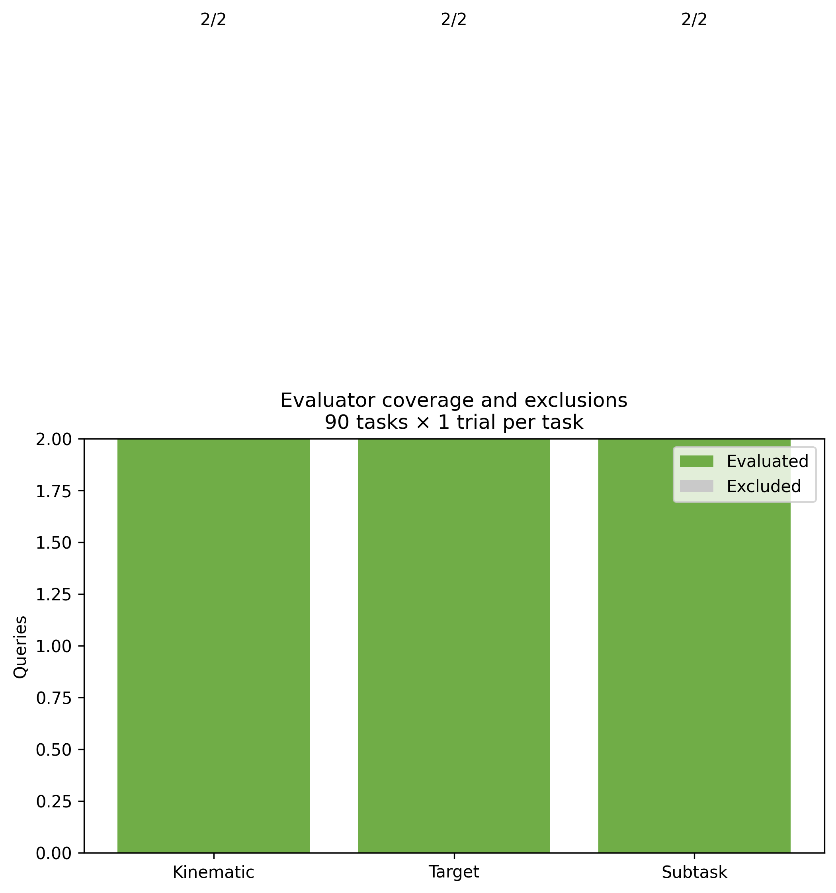

Initial LIBERO-90 qualitative audit: one trial per task
Executive summary
Confidence intervals are preliminary and episode-clustered. One outcome group has fewer than two episodes; its difference CI is intentionally unavailable.
Experiment configuration
| Checkpoint | /home/exx/Projects/ECOT-Alignment/artifacts/ecot-libero90/checkpoints/step-100000-epoch-22-loss=0.0261.pt |
|---|---|
| Repository commit | d3807dab67e73cdfc9047d075e1644c146fdb1b6 |
| Benchmark | LIBERO-90, Standard condition, all 90 tasks |
| Policy | Full ECoT MiniVLA; explicit reasoning enabled=True |
| Observation | fixed third-person agentview RGB |
| Action | 7 VQ-VAE tokens decoded to a 10-step, 7D action chunk |
| Seeds | base 20260901; base_seed + task_index (for exactly one trial per task) |
| Processes | 1 |
Checkpoint provenance: RHYu2233/ecot-libero90, a third-party Full-ECoT reproduction rather than an official paper-author checkpoint. Model configuration: base VLM prism-qwen25-extra-dinosiglip-224px+0_5b; reasoning mode ecot; action tokenizer libero_lm90_vq_h10_extra_action_tokenizer; image sequence length 1; wrist image False.
Runtime and projections
Projections use measured wall-clock throughput on this hardware and process count, not hard-coded estimates.
Two-task smoke runtime
Main preliminary table
Query- and episode-level statistics
| Level | Total queries | Evaluable / coverage | Query mismatch | Mean score | Median score | Episodes evaluable | Episodes with mismatch | Mean episode mismatch fraction |
|---|---|---|---|---|---|---|---|---|
| Kinematic | 2 | 2/2 (100.0%) | 0/2 (0.0%) | 1.000 | 1.000 | 2/2 | 0/2 (0.0%) | 0.0% (mean over 2 episodes) |
| Target | 2 | 2/2 (100.0%) | 2/2 (100.0%) | -0.553 | -0.553 | 2/2 | 2/2 (100.0%) | 100.0% (mean over 2 episodes) |
| Subtask | 2 | 2/2 (100.0%) | 2/2 (100.0%) | 0.000 | 0.000 | 2/2 | 2/2 (100.0%) | 100.0% (mean over 2 episodes) |
| Any level | 2 | 2/2 (100.0%) | 2/2 (100.0%) | — | — | 2/2 | 2/2 (100.0%) | 100.0% (mean over 2 episodes) |
Coverage and exclusions
Parser failures: 0/2; queries with warnings: 0/2; unresolved/ambiguous targets: 0/2; unsupported subtasks: 0/2. Missing scores are excluded from every denominator.
Publication figures
{kind=link}

{kind=link}

{kind=link}

{kind=link}

{kind=link}

{kind=link}

Mismatch overlap
{
"Target + Subtask": 2
}
Per-task audit table
Each row is one observed episode, not a per-task rate.
Qualitative review
Figure 1 candidates
Candidate selection is deterministic; final selection requires manual review.
Three-level explanatory examples
Kinematic
Target
Subtask
Appendix example bank
Selected full episode timelines
Statistical definitions and thresholds
- Kinematic mismatch: evaluable signed-axis score < 1.0.
kinematic_no_motionremains diagnostic only. - Target mismatch: resolved target score < 0 or wrong-object interaction.
- Subtask mismatch: supported observable primitive score < 1.
- Any level: at least one of the three evaluable levels mismatches.
- Confidence intervals: 20-replicate episode-clustered bootstrap, seed 20260901; difference is failed minus successful.
Known limitations and recommended next experiment
One trial cannot estimate task-specific variability. Generic repeated-object references remain unresolved rather than inferred. Visual arrows use MuJoCo camera calibration, but should still be manually inspected. Reasoning correctness is not measured.
This audit observed 2 failed episodes out of 2. Lowest target/subtask coverage was observed on task IDs 0, 1, including: close the top drawer of the cabinet; close the top drawer of the cabinet and put the black bowl on top of it. Repeated-object, articulated-fixture, and multi-stage placement tasks should receive additional sampling.
- Predefined representative quantitative sample: select 30 tasks before observing new outcomes, stratified by task primitive and current coverage, and run 10 additional Standard-condition trials each (300 episodes). Use this group for prevalence estimates.
- Failure-enriched diagnostic sample: run 5 additional Standard-condition trials on every failed task plus the ten lowest-coverage tasks, capped at 100 diagnostic episodes. Use it only for qualitative failure discovery, never overall prevalence.
After the 300-episode Standard replication, add a separately labeled 300-episode Perturbation + Distractors robustness condition using the same predefined tasks and seeds. Keep it separate from Standard-condition prevalence.